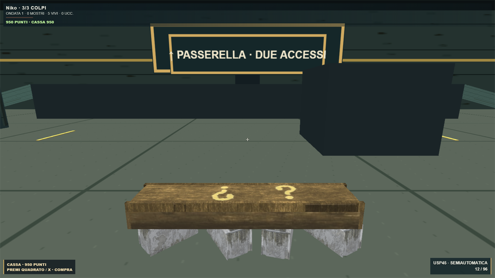
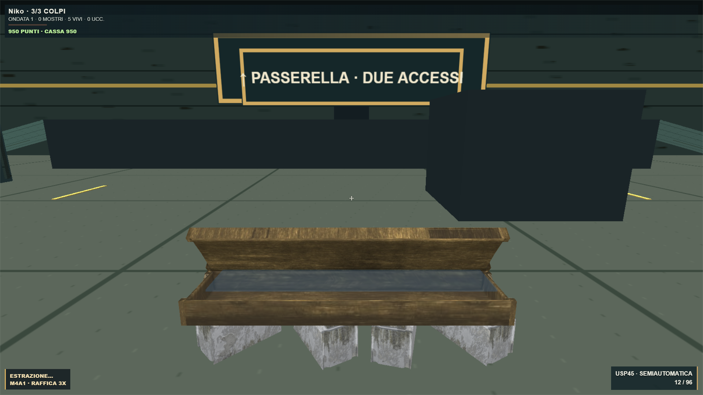
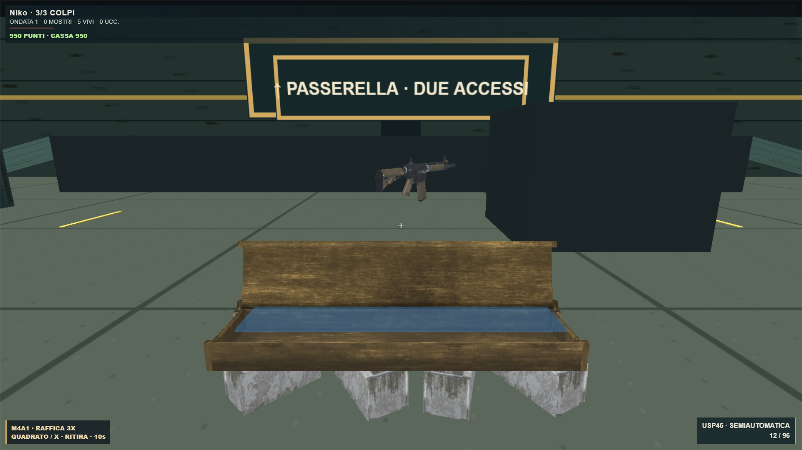

La Mystery Box prende vita
Apertura e chiusura sulla cerniera, roulette delle armi e luce interna. Il foglio è stato rimosso. Premi Quadrato / X vicino alla cassa per acquistare o ritirare; lontano, lo stesso tasto ricarica.
50 punti per uccisione · cassa a 950 · tre colpi per morire. Regole e armi preservate. Test mirati, cinque visuali, typecheck e build superati.
Suoni originali ispirati allo stile Mystery Box: carillon, meccanismo, premio e chiusura sincronizzata.
Estrazione · carillon e meccanismo Chiusura · impatto a 0,65 s 
Cassa chiusa · modello originale
Apertura sulla cerniera · cartello rimosso
Premio pronto · Quadrato / X per ritirareVerifiche · Party Game
Modello: Navillus360, CC BY 4.0. Nessun commit, push o deploy.